CODING AGENTS AS PIXEL WORLD MODELS
traex/GPT-6.1-Sol · common50_0008
点击播放 · 原生 RGB 像素
逐轮保存的候选
回放视频、检查图与代码变化。
每份候选均可单独播放。实际图片检查记录在下方工具轨迹中。
候选 01播放与检查图
点击播放 · 原生 RGB 像素

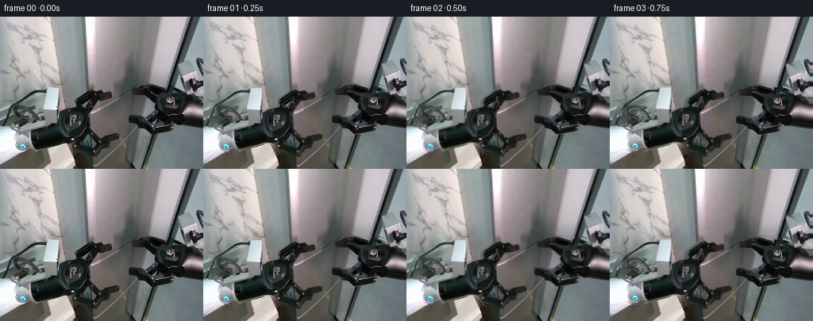
展开代码变化
--- 上一保存版本
+++ 本次保存版本
@@ -0,0 +1,156 @@
+from pathlib import Path
+import numpy as np
+from PIL import Image, ImageDraw, ImageFilter
+from scipy.ndimage import distance_transform_edt, gaussian_filter, map_coordinates
+import artifact_io
+
+ROOT=Path(__file__).resolve().parent
+W,H=256,192
+S=3
+
+def polygon_mask(polygons, holes=(), strokes=()):
+ im=Image.new('L',(W*S,H*S));d=ImageDraw.Draw(im)
+ for p in polygons: d.polygon([(round(x*S),round(y*S)) for x,y in p],fill=255)
+ for points,width in strokes:
+ d.line([(round(x*S),round(y*S)) for x,y in points],fill=255,width=round(width*S),joint='curve')
+ for p in holes: d.polygon([(round(x*S),round(y*S)) for x,y in p],fill=0)
+ return np.asarray(im.resize((W,H),Image.Resampling.LANCZOS),dtype=float)/255
+
+LEFT=[(0,139),(17,140),(26,135),(53,128),(54,116),(56,90),(73,90),(75,121),(81,117),(89,115),(95,114),
+ (95,104),(112,92),(116,91),(121,94),(127,93),(130,94),(132,97),(138,95),(140,96),(141,102),
+ (138,104),(126,106),(121,106),(115,116),(109,122),(110,137),(113,143),(122,153),(129,151),
+ (145,148),(148,147),(150,150),(150,155),(137,160),(136,166),(128,170),(119,172),(113,176),
+ (108,175),(97,172),(93,164),(86,159),(77,159),(44,167),(33,170),(26,169),(19,166),(0,184)]
+LH=[[(99,110),(111,101),(114,101),(107,114),(101,115)],
+ [(100,157),(108,146),(120,158),(115,165)]]
+LS=[([(4,139),(8,121),(12,114),(28,104),(40,96),(47,94),(56,94)],3.1),
+ ([(18,137),(17,127),(19,118),(25,114),(31,114),(38,118),(44,124),(48,133)],3.1),
+ ([(10,131),(21,128),(33,121),(43,115)],2.8)]
+RIGHT=[(256,59),(254,53),(251,52),(248,54),(248,60),(251,68),(255,73),
+ (256,76),(246,78),(245,70),(242,68),(224,56),(228,76),(233,95),(220,94),(216,90),
+ (212,88),(207,87),(194,85),(184,85),(177,88),(169,91),(164,91),(164,97),
+ (166,100),(178,101),(184,104),(193,112),(196,116),(197,121),(190,126),(187,127),
+ (176,127),(170,124),(164,124),(162,125),(162,133),(166,135),(174,136),(181,143),
+ (190,148),(216,144),(218,141),(219,137),(223,137),(228,139),(239,139),(256,141)]
+RH=[[(180,94),(183,92),(203,97),(204,99),(193,98)],
+ [(183,129),(196,122),(200,126),(197,131),(188,135)]]
+RS=[([(221,87),(224,88),(232,91)],2.4)]
+
+
+def clean_background(rgb, masks):
+ mask=np.maximum.reduce(masks)>0.04
+ # Expand minimally so that antialiased black silhouettes do not remain.
+ from scipy.ndimage import binary_dilation
+ mask=binary_dilation(mask,iterations=1)
+ yy,xx=np.mgrid[:H,:W]
+ # Inpaint each physical surface separately: no dark gripper colors are sampled.
+ labels=np.zeros((H,W),int)
+ labels[xx < 63+.12*yy]=1
+ labels[(xx >=63+.12*yy)&(xx <108+.04*yy)]=2
+ labels[(xx >=108+.04*yy)&(xx <240-.335*yy)]=3
+ labels[xx >=240-.335*yy]=4
+ out=rgb.astype(float).copy()
+ for label in range(1,5):
+ region=labels==label
+ known=region&~mask
+ _,idx=distance_transform_edt(~known,return_indices=True)
+ extrap=rgb[idx[0],idx[1]].astype(float)
+ # A smooth continuation of the original material, only under the arms.
+ blur=np.stack([gaussian_filter(extrap[:,:,c],4) for c in range(3)],-1)
+ out[mask®ion]=blur[mask®ion]
+ return out
+
+
+def rigid_layer(rgb, mask, dx,dy,angle, pivot):
+ yy,xx=np.mgrid[:H,:W].astype(float)
+ a=np.deg2rad(angle); ca,sa=np.cos(a),np.sin(a)
+ xp=xx-dx-pivot[0];yp=yy-dy-pivot[1]
+ sx=ca*xp+sa*yp+pivot[0];sy=-sa*xp+ca*yp+pivot[1]
+ coords=np.array([sy,sx])
+ col=np.stack([map_coordinates(rgb[:,:,c],coords,order=1,mode='nearest') for c in range(3)],-1)
+ # Continue the foreground through the image border, keeping the proximal arm attached.
+ alpha=map_coordinates(mask,coords,order=1,mode='nearest')
+ return col,alpha
+
+
+def ease(v):
+ v=np.clip(v,0,1);return v*v*(3-2*v)
+
+
+def door_background(bg,amount):
+ if amount<=0: return bg.copy()
+ yy,xx=np.mgrid[:H,:W].astype(float)
+ left=108+.04*yy
+ right=238-.33*yy
+ seam=168-.12*yy
+ # Two planar leaves pivot about their stationary outer jambs.
+ dl=amount*(9+5*yy/(H-1))
+ dr=amount*(10+6*yy/(H-1))
+ le=seam-dl; re=seam+dr
+ lx=left+(xx-left)*(seam-left)/np.maximum(le-left,1)
+ rx=right-(right-xx)*(right-seam)/np.maximum(right-re,1)
+ lcol=np.stack([map_coordinates(bg[:,:,c],np.array([yy,lx]),order=1,mode='nearest') for c in range(3)],-1)
+ rcol=np.stack([map_coordinates(bg[:,:,c],np.array([yy,rx]),order=1,mode='nearest') for c in range(3)],-1)
+ out=bg.copy()
+ ml=(xx>=left)&(xx<=le)
+ mr=(xx>=re)&(xx<=right)
+ out[ml]=lcol[ml];out[mr]=rcol[mr]
+ # Unlit interior revealed behind the free edges, with a stationary deep jamb.
+ gap=(xx>le)&(xx<re)&(xx>left)&(xx<right)
+ u=(xx-le)/np.maximum(re-le,.01)
+ interior=np.zeros_like(out)
+ ridge=np.exp(-((u-.77)/.105)**2)
+ dark=13+5*np.sin(yy/59)+10*ridge
+ interior[:,:,0]=dark*.83;interior[:,:,1]=dark*.97;interior[:,:,2]=dark*1.04
+ interior += (np.sin(yy*.16+xx*.33)*.65)[:,:,None]
+ # Back frame crossbar, visible only inside the opening.
+ band=np.exp(-((yy-79+.58*(xx-158))/1.4)**2)
+ interior+=band[:,:,None]*np.array([6,7,8])
+ out[gap]=interior[gap]
+ # Narrow bright edge and dark inner return of the actual rigid silver leaves.
+ for edge,side in [(le,-1),(re,1)]:
+ dist=(xx-edge)*side
+ bevel=(dist>=0)&(dist<1.0)&(xx>left)&(xx<right)
+ mix=.3*amount
+ out[bevel]=out[bevel]*(1-mix)+np.array([177,181,181])*mix
+ # The opening casts a soft, localized shadow on the adjacent metal.
+ shadow=(np.exp(-np.maximum(le-xx,0)/2.0)*ml+np.exp(-np.maximum(xx-re,0)/2.0)*mr)*.14*amount
+ out*=1-shadow[:,:,None]
+ return out
+
+
+def generate():
+ rgb=np.asarray(Image.open(ROOT/'first_frame.png').convert('RGB'),dtype=np.uint8)
+ left=polygon_mask([LEFT],LH,LS)
+ right=polygon_mask([RIGHT],RH,RS)
+ bg=clean_background(rgb,[left,right])
+ Image.fromarray(np.uint8(np.clip(bg,0,255))).save(ROOT/'.tmp/background.png')
+ Image.fromarray(np.uint8(np.maximum(left,right)*255)).save(ROOT/'.tmp/robot_mask.png')
+ out=[]
+ for i in range(20):
+ if i==0:
+ out.append(rgb.copy()); continue
+ approach=ease((i-.5)/5.5)
+ pry=ease((i-7)/10)
+ # Synchronized approach, short seated pause, then opposing rigid pulls.
+ ldx=8*approach-15*pry
+ ldy=-1.5*approach+3.0*pry
+ rdx=-7*approach+19*pry
+ rdy=2*approach-3.0*pry
+ la=0.6*approach+1.3*pry
+ ra=-.5*approach-1.1*pry
+ canvas=door_background(bg,pry)
+ lcol,lmask=rigid_layer(rgb.astype(float),left,ldx,ldy,la,(92,132))
+ rcol,rmask=rigid_layer(rgb.astype(float),right,rdx,rdy,ra,(214,109))
+ # Soft tool shadow stays on the metal rather than moving the workspace.
+ shadow=gaussian_filter(np.maximum(lmask,rmask),1.6)*.08
+ yy,xx=np.mgrid[:H,:W]
+ ondoor=(xx>108+.04*yy)&(xx<238-.33*yy)
+ canvas*=1-(shadow*ondoor)[:,:,None]
+ canvas=canvas*(1-lmask[:,:,None])+lcol*lmask[:,:,None]
+ canvas=canvas*(1-rmask[:,:,None])+rcol*rmask[:,:,None]
+ out.append(np.uint8(np.clip(np.rint(canvas),0,255)))
+ frames=np.stack(out)
+ artifact_io.save(frames,ROOT)
+
+if __name__=='__main__':generate()
候选 02播放与检查图
点击播放 · 原生 RGB 像素
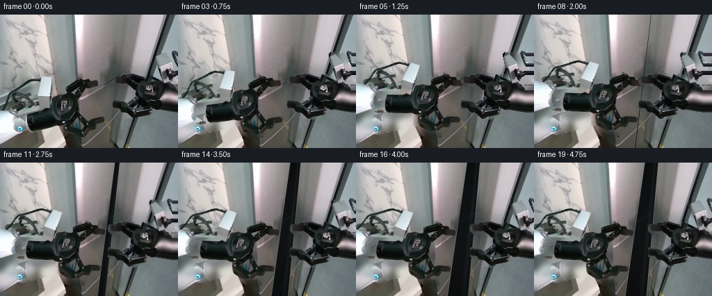
展开代码变化
--- 上一保存版本
+++ 本次保存版本
@@ -1,7 +1,7 @@
from pathlib import Path
import numpy as np
from PIL import Image, ImageDraw, ImageFilter
-from scipy.ndimage import distance_transform_edt, gaussian_filter, map_coordinates
+from scipy.ndimage import distance_transform_edt, gaussian_filter, map_coordinates, binary_fill_holes, label, binary_dilation
import artifact_io
ROOT=Path(__file__).resolve().parent
@@ -35,6 +35,37 @@
RH=[[(180,94),(183,92),(203,97),(204,99),(193,98)],
[(183,129),(196,122),(200,126),(197,131),(188,135)]]
RS=[([(221,87),(224,88),(232,91)],2.4)]
+
+
+def robot_masks(rgb):
+ # Original pixels supply the complete rigid tools, including all pins and jaws.
+ lum=np.mean(rgb.astype(float),axis=2)
+ broad_left=polygon_mask([LEFT],strokes=LS)
+ broad_right=polygon_mask([RIGHT],strokes=RS)
+ # Expand the outlined dark hardware then recover its silhouette from local contrast.
+ def dark_hardware(broad):
+ allowed=binary_dilation(broad>.12,iterations=2)
+ hard=(lum<84)&allowed
+ filled=binary_fill_holes(hard)
+ cc,n=label(filled&~hard)
+ for j in range(1,n+1):
+ area=cc==j
+ if area.sum()<21:hard[area]=True
+ # A soft, subpixel outline from the silhouette distance field.
+ dd=distance_transform_edt(hard)-distance_transform_edt(~hard)
+ a=np.clip(.5+dd*.7,0,1)
+ return a
+ lm=dark_hardware(broad_left)
+ rm=dark_hardware(broad_right)
+ # Solid proximal wrist covers are light metal, not part of dark-pixel selection.
+ bright_l=polygon_mask([[(0,139),(18,139),(25,141),(23,146),(21,151),(23,160),
+ (27,166),(23,169),(0,185)],
+ [(53,128),(54,115),(56,90),(73,90),(73,113),(74,122),(73,128)],
+ [(12,136),(27,128),(47,127),(57,128),(56,134),(29,141),(23,143)]])
+ bright_r=polygon_mask([[(222,57),(229,54),(242,68),(247,87),(247,96),(233,97),(229,82)],
+ [(228,102),(245,104),(256,109),(256,141),(236,137),(226,136)]])
+ lm=np.maximum(lm,bright_l);rm=np.maximum(rm,bright_r)
+ return lm,rm
def clean_background(rgb, masks):
@@ -106,13 +137,18 @@
# Back frame crossbar, visible only inside the opening.
band=np.exp(-((yy-79+.58*(xx-158))/1.4)**2)
interior+=band[:,:,None]*np.array([6,7,8])
- out[gap]=interior[gap]
+ lc=np.clip(le-xx+.5,0,1)
+ rc=np.clip(xx-re+.5,0,1)
+ gc=np.clip(1-lc-rc,0,1)
+ doors=(xx>=left)&(xx<=right)
+ blended=lcol*lc[:,:,None]+rcol*rc[:,:,None]+interior*gc[:,:,None]
+ out[doors]=blended[doors]
# Narrow bright edge and dark inner return of the actual rigid silver leaves.
for edge,side in [(le,-1),(re,1)]:
dist=(xx-edge)*side
- bevel=(dist>=0)&(dist<1.0)&(xx>left)&(xx<right)
- mix=.3*amount
- out[bevel]=out[bevel]*(1-mix)+np.array([177,181,181])*mix
+ bevel=np.exp(-((dist-.45)/.6)**2)*(dist>-.5)*(xx>left)*(xx<right)
+ mix=.30*amount*bevel[:,:,None]
+ out=out*(1-mix)+np.array([177,181,181])*mix
# The opening casts a soft, localized shadow on the adjacent metal.
shadow=(np.exp(-np.maximum(le-xx,0)/2.0)*ml+np.exp(-np.maximum(xx-re,0)/2.0)*mr)*.14*amount
out*=1-shadow[:,:,None]
@@ -121,8 +157,7 @@
def generate():
rgb=np.asarray(Image.open(ROOT/'first_frame.png').convert('RGB'),dtype=np.uint8)
- left=polygon_mask([LEFT],LH,LS)
- right=polygon_mask([RIGHT],RH,RS)
+ left,right=robot_masks(rgb)
bg=clean_background(rgb,[left,right])
Image.fromarray(np.uint8(np.clip(bg,0,255))).save(ROOT/'.tmp/background.png')
Image.fromarray(np.uint8(np.maximum(left,right)*255)).save(ROOT/'.tmp/robot_mask.png')
@@ -133,12 +168,12 @@
approach=ease((i-.5)/5.5)
pry=ease((i-7)/10)
# Synchronized approach, short seated pause, then opposing rigid pulls.
- ldx=8*approach-15*pry
- ldy=-1.5*approach+3.0*pry
- rdx=-7*approach+19*pry
- rdy=2*approach-3.0*pry
- la=0.6*approach+1.3*pry
- ra=-.5*approach-1.1*pry
+ ldx=7*approach-13*pry
+ ldy=-15*approach+1.0*pry
+ rdx=-12*approach+14*pry
+ rdy=0*approach-1.0*pry
+ la=17*approach+1.4*pry
+ ra=0*approach-.8*pry
canvas=door_background(bg,pry)
lcol,lmask=rigid_layer(rgb.astype(float),left,ldx,ldy,la,(92,132))
rcol,rmask=rigid_layer(rgb.astype(float),right,rdx,rdy,ra,(214,109))
候选 03播放与检查图
点击播放 · 原生 RGB 像素

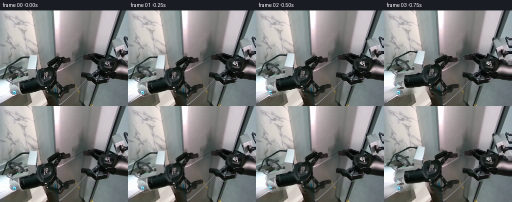
展开代码变化
--- 上一保存版本
+++ 本次保存版本
@@ -64,7 +64,12 @@
[(12,136),(27,128),(47,127),(57,128),(56,134),(29,141),(23,143)]])
bright_r=polygon_mask([[(222,57),(229,54),(242,68),(247,87),(247,96),(233,97),(229,82)],
[(228,102),(245,104),(256,109),(256,141),(236,137),(226,136)]])
- lm=np.maximum(lm,bright_l);rm=np.maximum(rm,bright_r)
+ core_l=polygon_mask([[(76,122),(88,116),(99,116),(105,121),(109,129),(110,139),
+ (106,149),(101,156),(91,160),(78,158),(46,166),(39,163),
+ (37,150),(39,143)]])
+ core_r=polygon_mask([[(197,101),(206,96),(217,95),(227,99),(232,106),(231,119),
+ (225,125),(217,130),(205,130),(197,124),(194,114)]])
+ lm=np.maximum.reduce([lm,bright_l,core_l]);rm=np.maximum.reduce([rm,bright_r,core_r])
return lm,rm
@@ -158,7 +163,9 @@
def generate():
rgb=np.asarray(Image.open(ROOT/'first_frame.png').convert('RGB'),dtype=np.uint8)
left,right=robot_masks(rgb)
- bg=clean_background(rgb,[left,right])
+ cleanup_l=polygon_mask([LEFT],strokes=LS)
+ cleanup_r=polygon_mask([RIGHT],strokes=RS)
+ bg=clean_background(rgb,[left,right,cleanup_l,cleanup_r])
Image.fromarray(np.uint8(np.clip(bg,0,255))).save(ROOT/'.tmp/background.png')
Image.fromarray(np.uint8(np.maximum(left,right)*255)).save(ROOT/'.tmp/robot_mask.png')
out=[]
候选 04播放与检查图
候选 05播放与检查图
点击播放 · 原生 RGB 像素
展开代码变化
--- 上一保存版本
+++ 本次保存版本
@@ -94,6 +94,14 @@
# A smooth continuation of the original material, only under the arms.
blur=np.stack([gaussian_filter(extrap[:,:,c],4) for c in range(3)],-1)
out[mask®ion]=blur[mask®ion]
+ # The marble backing is stationary. Reuse its visible texture rather than
+ # allowing the vacated white wrist highlight to become part of the wall.
+ source_y=np.maximum(yy-89,0).astype(float)
+ source_x=(xx*.76).astype(float)
+ marble=np.stack([map_coordinates(rgb[:,:,c].astype(float),np.array([source_y,source_x]),
+ order=1,mode='nearest') for c in range(3)],-1)
+ wall=mask&(labels==1)&(yy>89)&(yy<174-.23*xx)
+ out[wall]=marble[wall]*.91
return out
候选 06播放与检查图
点击播放 · 原生 RGB 像素

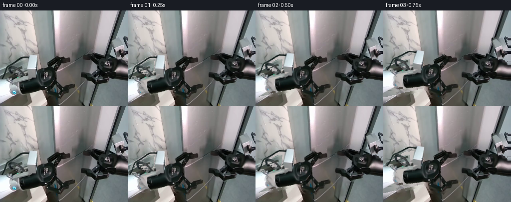
展开代码变化
--- 上一保存版本
+++ 本次保存版本
@@ -64,12 +64,14 @@
[(12,136),(27,128),(47,127),(57,128),(56,134),(29,141),(23,143)]])
bright_r=polygon_mask([[(222,57),(229,54),(242,68),(247,87),(247,96),(233,97),(229,82)],
[(228,102),(245,104),(256,109),(256,141),(236,137),(226,136)]])
+ collar=polygon_mask([[(18,146),(21,139),(29,137),(38,137),(39,145),(40,158),
+ (44,166),(33,170),(27,169),(21,164),(18,155)]])
core_l=polygon_mask([[(76,122),(88,116),(99,116),(105,121),(109,129),(110,139),
(106,149),(101,156),(91,160),(78,158),(46,166),(39,163),
(37,150),(39,143)]])
core_r=polygon_mask([[(197,101),(206,96),(217,95),(227,99),(232,106),(231,119),
(225,125),(217,130),(205,130),(197,124),(194,114)]])
- lm=np.maximum.reduce([lm,bright_l,core_l]);rm=np.maximum.reduce([rm,bright_r,core_r])
+ lm=np.maximum.reduce([lm,bright_l,core_l,collar]);rm=np.maximum.reduce([rm,bright_r,core_r])
return lm,rm
候选 07播放与检查图
可观测工具轨迹
实际执行的命令与返回图片。
命令 1exit 0
/bin/bash -lc "ls -la && cat prompt.txt && printf '\\n---RULES---\\n' && cat GENERATION_RULES.md"
命令 2exit 0
/bin/bash -lc "cat task_spec.json && cat artifact_io.py && python - <<'PY'
from PIL import Image
im=Image.open('first_frame.png');print(im.size); im.resize((1024,768)).save('.tmp/enlarged.png')
PY"命令 3exit 0
/bin/bash -lc "python - <<'PY'
from PIL import Image,ImageDraw
im=Image.open('first_frame.png').resize((1024,768)); d=ImageDraw.Draw(im)
for x in range(0,256,16):
d.line((x*4,0,x*4,768),fill=(250,100,100),width=1);d.text((x*4+2,0),str(x),fill='red')
for y in range(0,192,16):
d.line((0,y*4,1024,y*4),fill=(250,100,100),width=1);d.text((0,y*4+2),str(y),fill='red')
im.save('.tmp/grid.png')
PY"命令 4exit 0
/bin/bash -lc "python - <<'PY'
from PIL import Image
im=Image.open('first_frame.png'); im.crop((70,85,155,180)).resize((680,760)).save('.tmp/left.png');im.crop((158,80,256,149)).resize((784,552)).save('.tmp/right.png')
PY"命令 5exit 0
/bin/bash -lc "python - <<'PY'
from PIL import Image
im=Image.open('first_frame.png'); im.resize((1280,960),Image.Resampling.NEAREST).save('.tmp/pixels.png')
PY"命令 6exit 0
/bin/bash -lc "python - <<'PY' import scipy print(scipy.__version__) PY"
命令 7exit 0
/bin/bash -lc "cat > generate.py <<'PY'
from pathlib import Path
import numpy as np
from PIL import Image, ImageDraw, ImageFilter
from scipy.ndimage import distance_transform_edt, gaussian_filter, map_coordinates
import artifact_io
ROOT=Path(__file__).resolve().parent
W,H=256,192
S=3
def polygon_mask(polygons, holes=(), strokes=()):
im=Image.new('L',(W*S,H*S));d=ImageDraw.Draw(im)
for p in polygons: d.polygon([(round(x*S),round(y*S)) for x,y in p],fill=255)
for points,width in strokes:
d.line([(round(x*S),round(y*S)) for x,y in points],fill=255,width=round(width*S),joint='curve')
for p in holes: d.polygon([(round(x*S),round(y*S)) for x,y in p],fill=0)
return np.asarray(im.resize((W,H),Image.Resampling.LANCZOS),dtype=float)/255
LEFT=[(0,139),(17,140),(26,135),(53,128),(54,116),(56,90),(73,90),(75,121),(81,117),(89,115),(95,114),
(95,104),(112,92),(116,91),(121,94),(127,93),(130,94),(132,97),(138,95),(140,96),(141,102),
(138,104),(126,106),(121,106),(115,116),(109,122),(110,137),(113,143),(122,153),(129,151),
(145,148),(148,147),(150,150),(150,155),(137,160),(136,166),(128,170),(119,172),(113,176),
(108,175),(97,172),(93,164),(86,159),(77,159),(44,167),(33,170),(26,169),(19,166),(0,184)]
LH=[[(99,110),(111,101),(114,101),(107,114),(101,115)],
[(100,157),(108,146),(120,158),(115,165)]]
LS=[([(4,139),(8,121),(12,114),(28,104),(40,96),(47,94),(56,94)],3.1),
([(18,137),(17,127),(19,118),(25,114),(31,114),(38,118),(44,124),(48,133)],3.1),
([(10,131),(21,128),(33,121),(43,115)],2.8)]
RIGHT=[(256,59),(254,53),(251,52),(248,54),(248,60),(251,68),(255,73),
(256,76),(246,78),(245,70),(242,68),(224,56),(228,76),(233,95),(220,94),(216,90),
(212,88),(207,87),(194,85),(184,85),(177,88),(169,91),(164,91),(164,97),
(166,100),(178,101),(184,104),(193,112),(196,116),(197,121),(190,126),(187,127),
(176,127),(170,124),(164,124),(162,125),(162,133),(166,135),(174,136),(181,143),
(190,148),(216,144),(218,141),(219,137),(223,137),(228,139),(239,139),(256,141)]
RH=[[(180,94),(183,92),(203,97),(204,99),(193,98)],
[(183,129),(196,122),(200,126),(197,131),(188,135)]]
RS=[([(221,87),(224,88),(232,91)],2.4)]
def clean_background(rgb, masks):
mask=np.maximum.reduce(masks)>0.04
# Expand minimally so that antialiased black silhouettes do not remain.
from scipy.ndimage import binary_dilation
mask=binary_dilation(mask,iterations=1)
yy,xx=np.mgrid[:H,:W]
# Inpaint each physical surface separately: no dark gripper colors are sampled.
labels=np.zeros((H,W),int)
labels[xx < 63+.12*yy]=1
labels[(xx >=63+.12*yy)&(xx <108+.04*yy)]=2
labels[(xx >=108+.04*yy)&(xx <240-.335*yy)]=3
labels[xx >=240-.335*yy]=4
out=rgb.astype(float).copy()
for label in range(1,5):
region=labels==label
known=region&~mask
_,idx=distance_transform_edt(~known,return_indices=True)
extrap=rgb[idx[0],idx[1]].astype(float)
# A smooth continuation of the original material, only under the arms.
blur=np.stack([gaussian_filter(extrap[:,:,c],4) for c in range(3)],-1)
out[mask®ion]=blur[mask®ion]
return out
def rigid_layer(rgb, mask, dx,dy,angle, pivot):
yy,xx=np.mgrid[:H,:W].astype(float)
a=np.deg2rad(angle); ca,sa=np.cos(a),np.sin(a)
xp=xx-dx-pivot[0];yp=yy-dy-pivot[1]
sx=ca*xp+sa*yp+pivot[0];sy=-sa*xp+ca*yp+pivot[1]
coords=np.array([sy,sx])
col=np.stack([map_coordinates(rgb[:,:,c],coords,order=1,mode='nearest') for c in range(3)],-1)
# Continue the foreground through the image border, keeping the proximal arm attached.
alpha=map_coordinates(mask,coords,order=1,mode='nearest')
return col,alpha
def ease(v):
v=np.clip(v,0,1);return v*v*(3-2*v)
def door_background(bg,amount):
if amount<=0: return bg.copy()
yy,xx=np.mgrid[:H,:W].astype(float)
left=108+.04*yy
right=238-.33*yy
seam=168-.12*yy
# Two planar leaves pivot about their stationary outer jambs.
dl=amount*(9+5*yy/(H-1))
dr=amount*(10+6*yy/(H-1))
le=seam-dl; re=seam+dr
lx=left+(xx-left)*(seam-left)/np.maximum(le-left,1)
rx=right-(right-xx)*(right-seam)/np.maximum(right-re,1)
lcol=np.stack([map_coordinates(bg[:,:,c],np.array([yy,lx]),order=1,mode='nearest') for c in range(3)],-1)
rcol=np.stack([map_coordinates(bg[:,:,c],np.array([yy,rx]),order=1,mode='nearest') for c in range(3)],-1)
out=bg.copy()
ml=(xx>=left)&(xx<=le)
mr=(xx>=re)&(xx<=right)
out[ml]=lcol[ml];out[mr]=rcol[mr]
# Unlit interior revealed behind the free edges, with a stationary deep jamb.
gap=(xx>le)&(xx<re)&(xx>left)&(xx<right)
u=(xx-le)/np.maximum(re-le,.01)
interior=np.zeros_like(out)
ridge=np.exp(-((u-.77)/.105)**2)
dark=13+5*np.sin(yy/59)+10*ridge
interior[:,:,0]=dark*.83;interior[:,:,1]=dark*.97;interior[:,:,2]=dark*1.04
interior += (np.sin(yy*.16+xx*.33)*.65)[:,:,None]
# Back frame crossbar, visible only inside the opening.
band=np.exp(-((yy-79+.58*(xx-158))/1.4)**2)
interior+=band[:,:,None]*np.array([6,7,8])
out[gap]=interior[gap]
# Narrow bright edge and dark inner return of the actual rigid silver leaves.
for edge,side in [(le,-1),(re,1)]:
dist=(xx-edge)*side
bevel=(dist>=0)&(dist<1.0)&(xx>left)&(xx<right)
mix=.3*amount
out[bevel]=out[bevel]*(1-mix)+np.array([177,181,181])*mix
# The opening casts a soft, localized shadow on the adjacent metal.
shadow=(np.exp(-np.maximum(le-xx,0)/2.0)*ml+np.exp(-np.maximum(xx-re,0)/2.0)*mr)*.14*amount
out*=1-shadow[:,:,None]
return out
def generate():
rgb=np.asarray(Image.open(ROOT/'first_frame.png').convert('RGB'),dtype=np.uint8)
left=polygon_mask([LEFT],LH,LS)
right=polygon_mask([RIGHT],RH,RS)
bg=clean_background(rgb,[left,right])
Image.fromarray(np.uint8(np.clip(bg,0,255))).save(ROOT/'.tmp/background.png')
Image.fromarray(np.uint8(np.maximum(left,right)*255)).save(ROOT/'.tmp/robot_mask.png')
out=[]
for i in range(20):
if i==0:
out.append(rgb.copy()); continue
approach=ease((i-.5)/5.5)
pry=ease((i-7)/10)
# Synchronized approach, short seated pause, then opposing rigid pulls.
ldx=8*approach-15*pry
ldy=-1.5*approach+3.0*pry
rdx=-7*approach+19*pry
rdy=2*approach-3.0*pry
la=0.6*approach+1.3*pry
ra=-.5*approach-1.1*pry
canvas=door_background(bg,pry)
lcol,lmask=rigid_layer(rgb.astype(float),left,ldx,ldy,la,(92,132))
rcol,rmask=rigid_layer(rgb.astype(float),right,rdx,rdy,ra,(214,109))
# Soft tool shadow stays on the metal rather than moving the workspace.
shadow=gaussian_filter(np.maximum(lmask,rmask),1.6)*.08
yy,xx=np.mgrid[:H,:W]
ondoor=(xx>108+.04*yy)&(xx<238-.33*yy)
canvas*=1-(shadow*ondoor)[:,:,None]
canvas=canvas*(1-lmask[:,:,None])+lcol*lmask[:,:,None]
canvas=canvas*(1-rmask[:,:,None])+rcol*rmask[:,:,None]
out.append(np.uint8(np.clip(np.rint(canvas),0,255)))
frames=np.stack(out)
artifact_io.save(frames,ROOT)
if __name__=='__main__':generate()
PY
python generate.py"命令 8exit 0
/bin/bash -lc "python - <<'PY'
from PIL import Image
im=Image.open('first_frame.png').crop((92,88,118,124)).resize((520,720));im.save('.tmp/link.png')
PY"命令 9exit 0
/bin/bash -lc "python - <<'PY'
from PIL import Image
for i in [1,5,19]:Image.open(f'frames/{i:02}.png').resize((1024,768)).save(f'.tmp/frame{i}.png')
PY"命令 10exit 0
/bin/bash -lc "cp generate.py .tmp/generate_v1.py
python - <<'PY'
p='generate.py'
s=open(p).read();s=s.replace('from scipy.ndimage import distance_transform_edt, gaussian_filter, map_coordinates','from scipy.ndimage import distance_transform_edt, gaussian_filter, map_coordinates, binary_fill_holes, label, binary_dilation')
start=s.index('\\ndef clean_background')
s=s[:start]+'''
def robot_masks(rgb):
# Original pixels supply the complete rigid tools, including all pins and jaws.
lum=np.mean(rgb.astype(float),axis=2)
broad_left=polygon_mask([LEFT],strokes=LS)
broad_right=polygon_mask([RIGHT],strokes=RS)
# Expand the outlined dark hardware then recover its silhouette from local contrast.
def dark_hardware(broad):
allowed=binary_dilation(broad>.12,iterations=2)
hard=(lum<84)&allowed
filled=binary_fill_holes(hard)
cc,n=label(filled&~hard)
for j in range(1,n+1):
area=cc==j
if area.sum()<21:hard[area]=True
# A soft, subpixel outline from the silhouette distance field.
dd=distance_transform_edt(hard)-distance_transform_edt(~hard)
a=np.clip(.5+dd*.7,0,1)
return a
lm=dark_hardware(broad_left)
rm=dark_hardware(broad_right)
# Solid proximal wrist covers are light metal, not part of dark-pixel selection.
bright_l=polygon_mask([[(0,139),(18,139),(25,141),(23,146),(21,151),(23,160),
(27,166),(23,169),(0,185)],
[(53,128),(54,115),(56,90),(73,90),(73,113),(74,122),(73,128)],
[(12,136),(27,128),(47,127),(57,128),(56,134),(29,141),(23,143)]])
bright_r=polygon_mask([[(222,57),(229,54),(242,68),(247,87),(247,96),(233,97),(229,82)],
[(228,102),(245,104),(256,109),(256,141),(236,137),(226,136)]])
lm=np.maximum(lm,bright_l);rm=np.maximum(rm,bright_r)
return lm,rm
''' + s[start:]
s=s.replace(\"left=polygon_mask([LEFT],LH,LS)\\n right=polygon_mask([RIGHT],RH,RS)\",\"left,right=robot_masks(rgb)\")
s=s.replace('ldx=8*approach-15*pry','ldx=7*approach-13*pry').replace('ldy=-1.5*approach+3.0*pry','ldy=-15*approach+1.0*pry').replace('rdx=-7*approach+19*pry','rdx=-12*approach+14*pry').replace('rdy=2*approach-3.0*pry','rdy=0*approach-1.0*pry').replace('la=0.6*approach+1.3*pry','la=17*approach+1.4*pry').replace('ra=-.5*approach-1.1*pry','ra=0*approach-.8*pry')
# antialiased door surfaces
s=s.replace(''' out[ml]=lcol[ml];out[mr]=rcol[mr]''',''' out[ml]=lcol[ml];out[mr]=rcol[mr]''')
s=s.replace(''' out[gap]=interior[gap]
# Narrow bright edge''',''' lc=np.clip(le-xx+.5,0,1)
rc=np.clip(xx-re+.5,0,1)
gc=np.clip(1-lc-rc,0,1)
doors=(xx>=left)&(xx<=right)
blended=lcol*lc[:,:,None]+rcol*rc[:,:,None]+interior*gc[:,:,None]
out[doors]=blended[doors]
# Narrow bright edge''')
s=s.replace(''' bevel=(dist>=0)&(dist<1.0)&(xx>left)&(xx<right)
mix=.3*amount
out[bevel]=out[bevel]*(1-mix)+np.array([177,181,181])*mix''',''' bevel=np.exp(-((dist-.45)/.6)**2)*(dist>-.5)*(xx>left)*(xx<right)
mix=.30*amount*bevel[:,:,None]
out=out*(1-mix)+np.array([177,181,181])*mix''')
open(p,'w').write(s)
PY
python generate.py
python - <<'PY'
from PIL import Image
for i in [1,5,19]:Image.open(f'frames/{i:02}.png').resize((1024,768)).save(f'.tmp/frame{i}_v2.png')
PY"命令 11exit 0
/bin/bash -lc "cp generate.py .tmp/generate_v2.py
python - <<'PY'
p='generate.py';s=open(p).read()
s=s.replace(''' lm=np.maximum(lm,bright_l);rm=np.maximum(rm,bright_r)
return lm,rm''',''' core_l=polygon_mask([[(76,122),(88,116),(99,116),(105,121),(109,129),(110,139),
(106,149),(101,156),(91,160),(78,158),(46,166),(39,163),
(37,150),(39,143)]])
core_r=polygon_mask([[(197,101),(206,96),(217,95),(227,99),(232,106),(231,119),
(225,125),(217,130),(205,130),(197,124),(194,114)]])
lm=np.maximum.reduce([lm,bright_l,core_l]);rm=np.maximum.reduce([rm,bright_r,core_r])
return lm,rm''')
s=s.replace(''' bg=clean_background(rgb,[left,right])''',''' cleanup_l=polygon_mask([LEFT],strokes=LS)
cleanup_r=polygon_mask([RIGHT],strokes=RS)
bg=clean_background(rgb,[left,right,cleanup_l,cleanup_r])''')
open(p,'w').write(s)
PY
python generate.py
python - <<'PY'
from PIL import Image
Image.open('frames/19.png').resize((1024,768)).save('.tmp/final_v3.png')
PY"命令 12exit 0
/bin/bash -lc "cp generate.py .tmp/generate_v3.py
python - <<'PY'
p='generate.py';s=open(p).read()
s=s.replace(''' out[mask®ion]=blur[mask®ion]
return out''',''' out[mask®ion]=blur[mask®ion]
# The marble backing is stationary. Reuse its visible texture rather than
# allowing the vacated white wrist highlight to become part of the wall.
source_y=np.maximum(yy-89,0).astype(float)
source_x=(xx*.76).astype(float)
marble=np.stack([map_coordinates(rgb[:,:,c].astype(float),np.array([source_y,source_x]),
order=1,mode='nearest') for c in range(3)],-1)
wall=mask&(labels==1)&(yy>89)&(yy<174-.23*xx)
out[wall]=marble[wall]*.91
return out''')
open(p,'w').write(s)
PY
python generate.py
python - <<'PY'
from PIL import Image
Image.open('frames/19.png').resize((1024,768)).save('.tmp/final_v4.png')
PY
command -v ffmpeg || true"命令 13exit 0
/bin/bash -lc "python - <<'PY'
p='generate.py';s=open(p).read();s=s.replace(''' core_l=polygon_mask([[(76,122)''',''' collar=polygon_mask([[(18,146),(21,139),(29,137),(38,137),(39,145),(40,158),
(44,166),(33,170),(27,169),(21,164),(18,155)]])
core_l=polygon_mask([[(76,122)''');s=s.replace('lm=np.maximum.reduce([lm,bright_l,core_l])','lm=np.maximum.reduce([lm,bright_l,core_l,collar])')
open(p,'w').write(s)
PY
python generate.py
python - <<'PY'
import numpy as np
from PIL import Image
p=np.load('pixels.npz')['pixels']
a=np.asarray(Image.open('frames/00.png'))
b=np.asarray(Image.open('first_frame.png'))
assert np.array_equal(a,b)
assert p.shape==(192,256,20)
assert len(list(__import__('pathlib').Path('frames').glob('*.png')))==20
print('Verified: 20 RGB frames, 256x192, 4 fps; first frame exactly preserved.')
print('Output: index.html, pixels.npz, frames/, generate.py')
PY"视觉工具实际返回图片 1
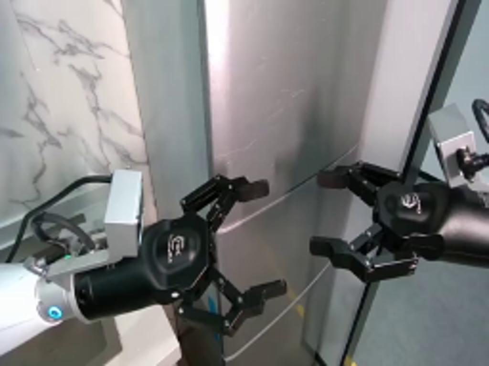
视觉工具实际返回图片 2
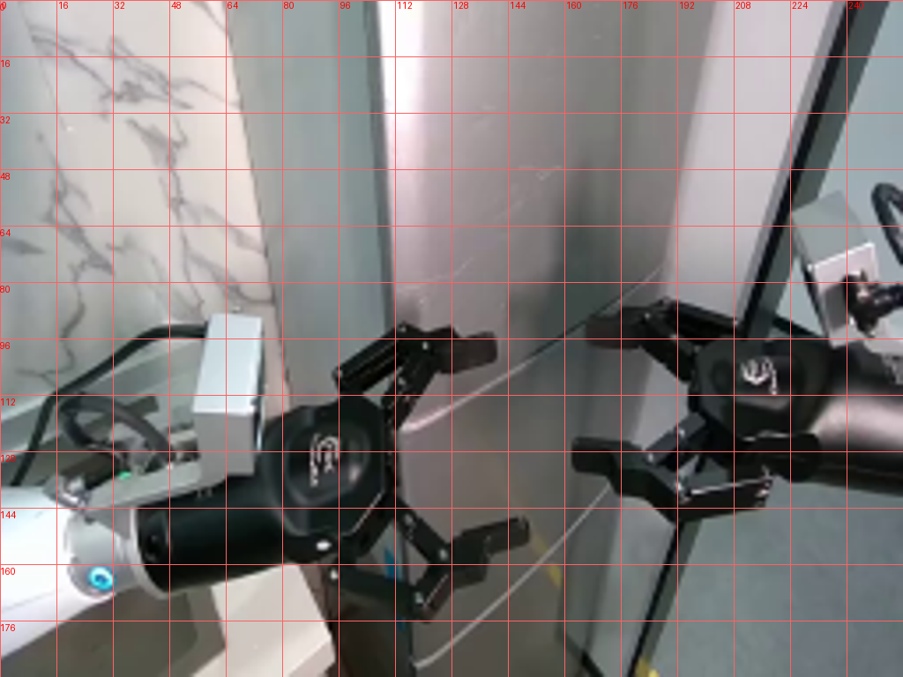
视觉工具实际返回图片 3
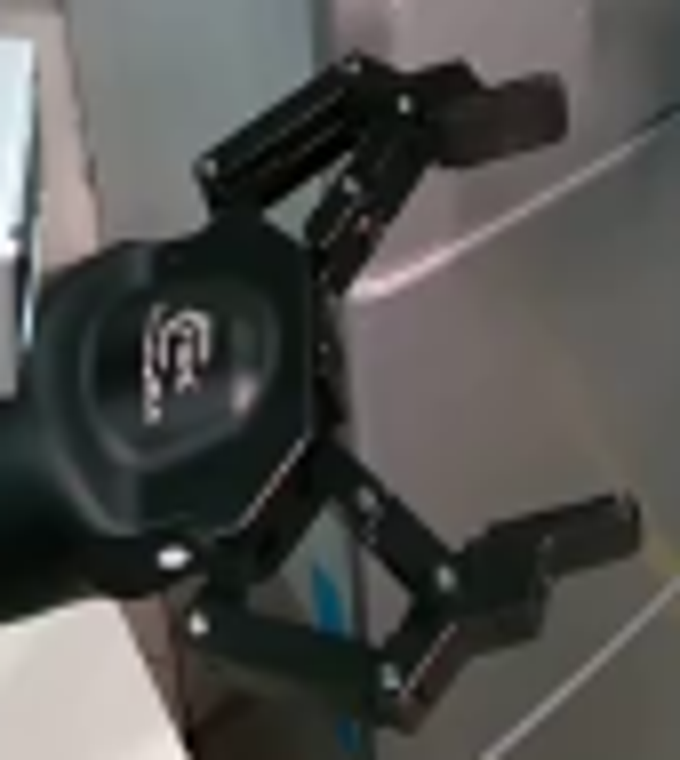
视觉工具实际返回图片 4
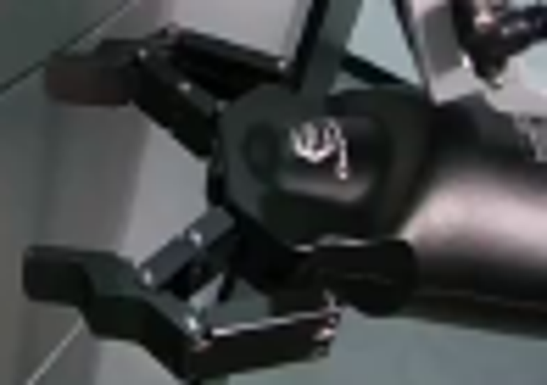
视觉工具实际返回图片 5
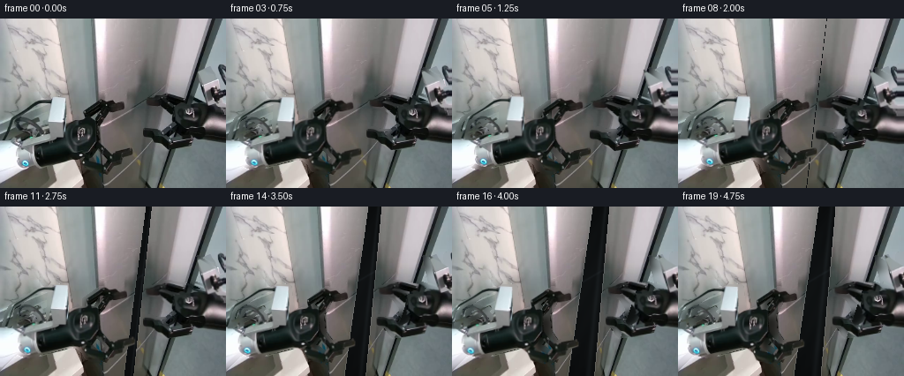
视觉工具实际返回图片 6
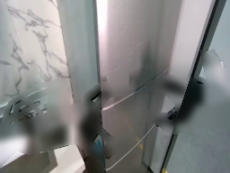
视觉工具实际返回图片 7
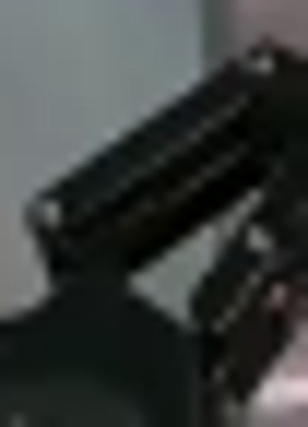
视觉工具实际返回图片 8
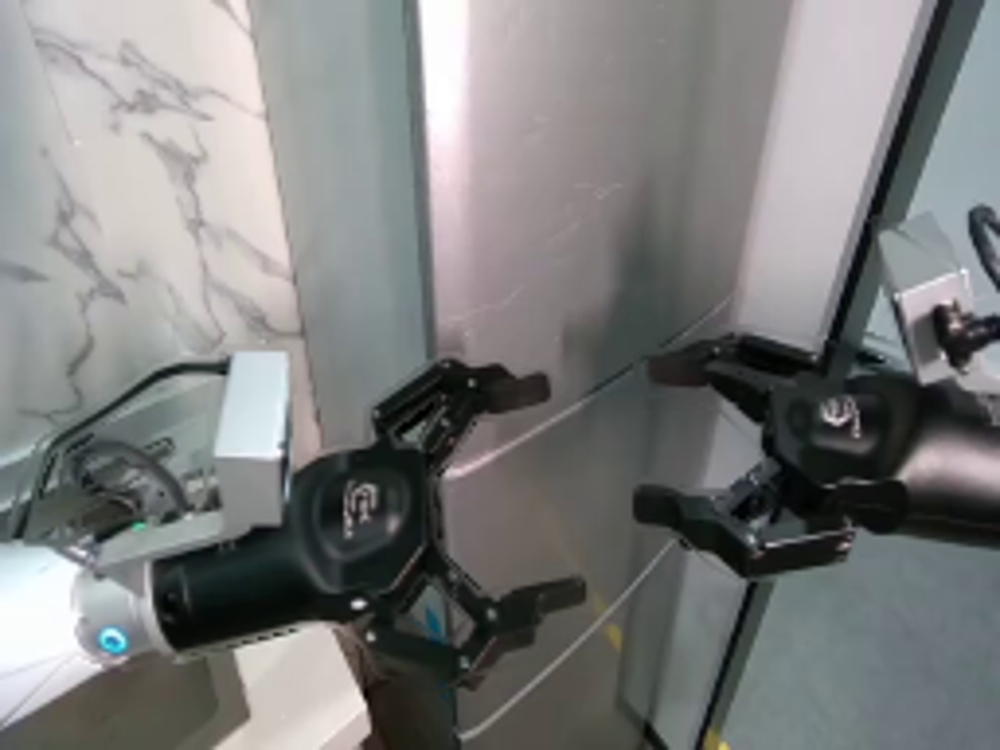
视觉工具实际返回图片 9
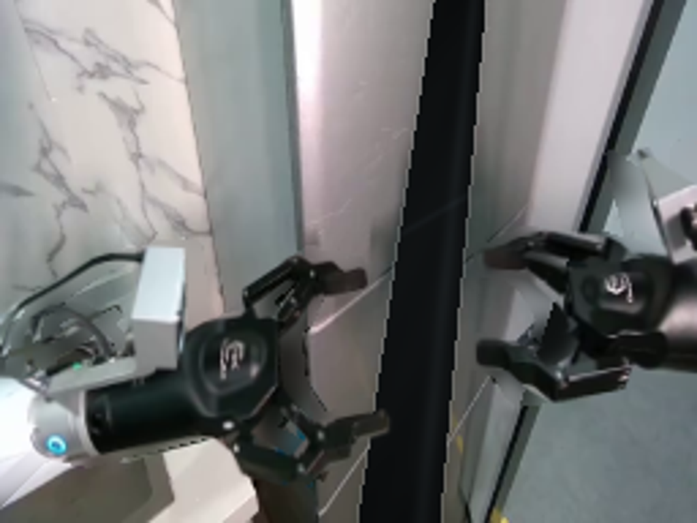
视觉工具实际返回图片 10

视觉工具实际返回图片 11
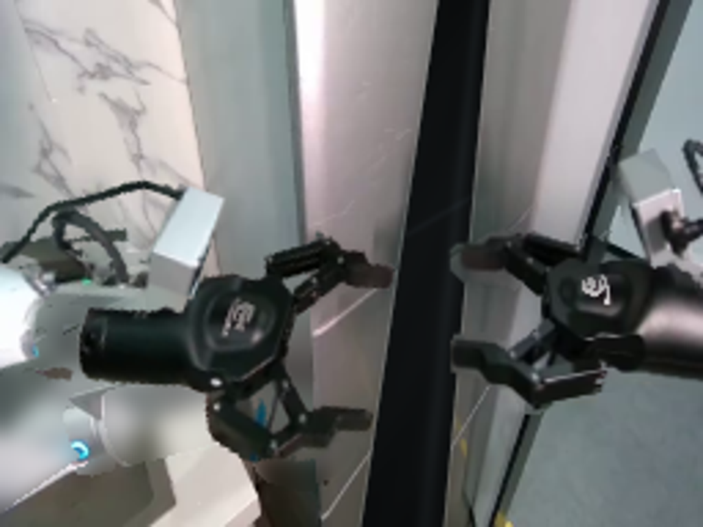
视觉工具实际返回图片 12
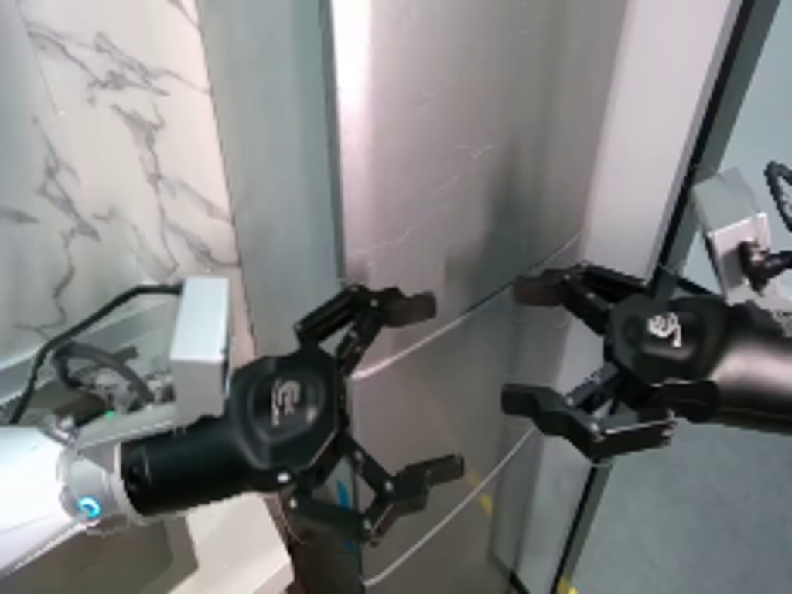
视觉工具实际返回图片 13
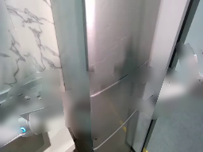
视觉工具实际返回图片 14
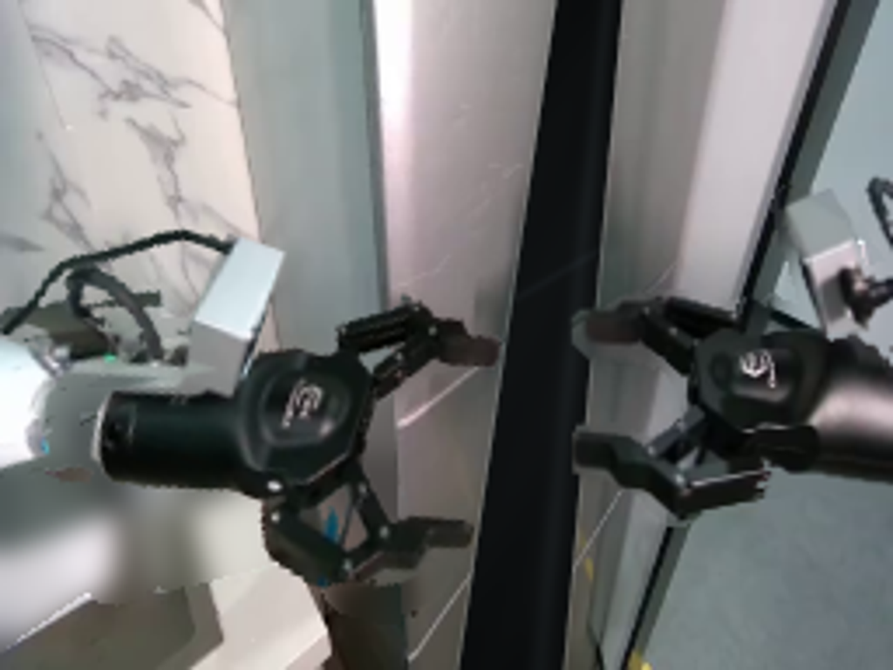
视觉工具实际返回图片 15
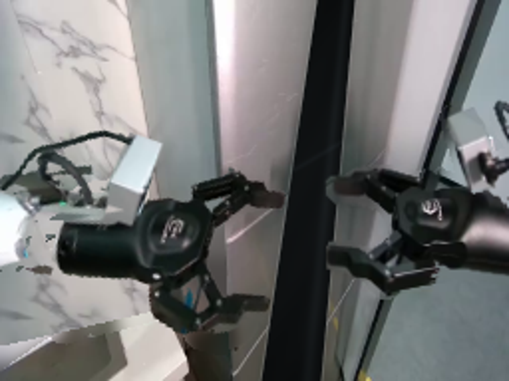
保存候选 7 份；完成命令 13 次；可验证图片返回 15 张。原始 API 响应与完整日志保留在本地。